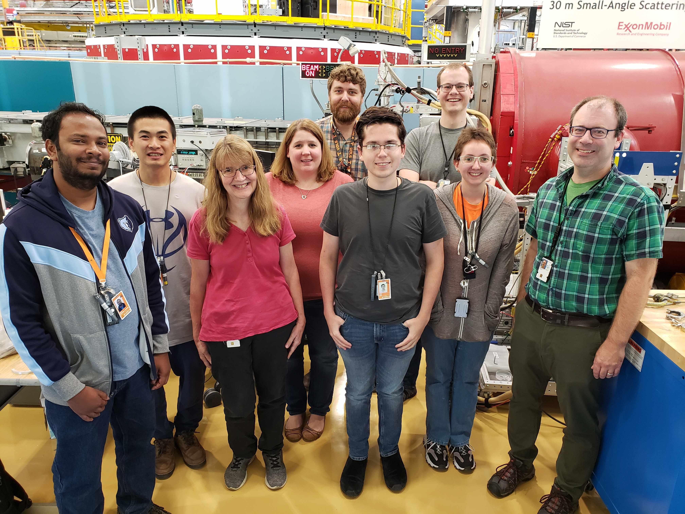

Joint Institute for Advance Materials [JIAM]
Gilbert Group
The Joint Institute for Advanced Materials (JIAM) focuses on studying new ways of using previously unexplored scientific phenomenon. The Gilbert Group narrows that focus down to magnetism, finding new and interesting ways of exploiting electromagnetism in future electronics. Dr. Dustin Gilbert leads the group of students from the University of Tennessee, Knoxville, some of the best minds from both undergraduates and post-graduate students at the Tickle College of Engineering.
A picture of our lab, performing an experiment at NIST on the NG7 SANS instrument, in August of 2019. Left to right: Namila Liyanage, Nan Tang, Julie Borchers, Lisa Debeer-Schmidt, Dustin Gilbert, James Lee, Alex Grutter, Liz Quigley, and Brian Maranville